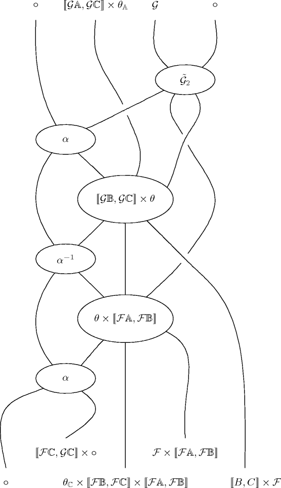

strid is a tool to generate string diagrams for inclusion in LaTeX documents. These diagrams are often used in category theory as a convenient way to represent 2-cells in 2-categories. It has a syntax which is inspired of Xy-matrix (but dual diagrams are generated). It is written in OCaml and freely distributed under the GPL license.
The released versions of strid can be found on the downloads page. Hackers may also be interested in getting the code from SVN or in a snapshot of the current version.
You can read the pdf manual or the installation instructions.
You may want to browse the project page on sourceforge.
Please use the mailing-list (strid-users@lists.sf.net) to contact me about strid.
